cBioChatA Conversational Interface for cBioPortal and HTAN Data
HTAN-TBEL Data Science Mini-Symposium
October 30, 2026
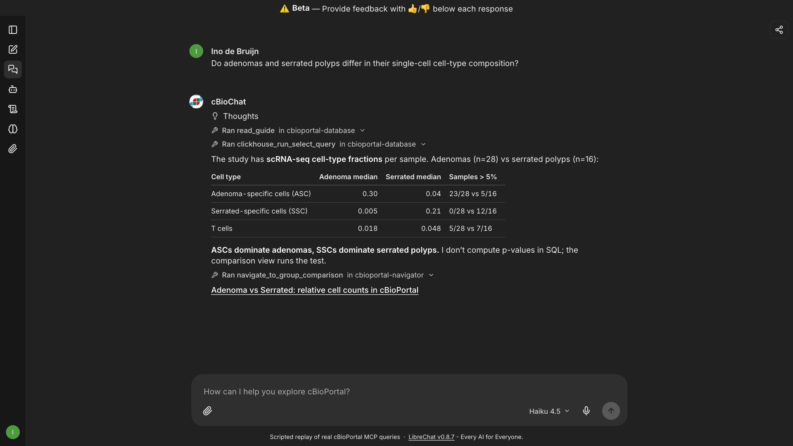
chat.cbioportal.org
Ino de Bruijn, PhDData Visualization Team Lead, Memorial Sloan Kettering Cancer CenterHTAN Data Coordinating Center (HTAN DCC)
cBioPortal for Cancer Genomics
Make complex cancer genomic data accessible and interpretable
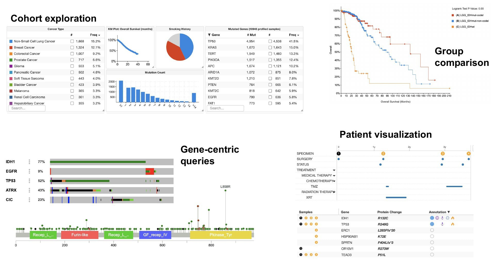
Open source and open data, maintained by MSK, Dana-Farber, UHN, CHOP, The Hyve and SE4BIO
15+ Years of cBioPortal
One of the most used tools in cancer genomics
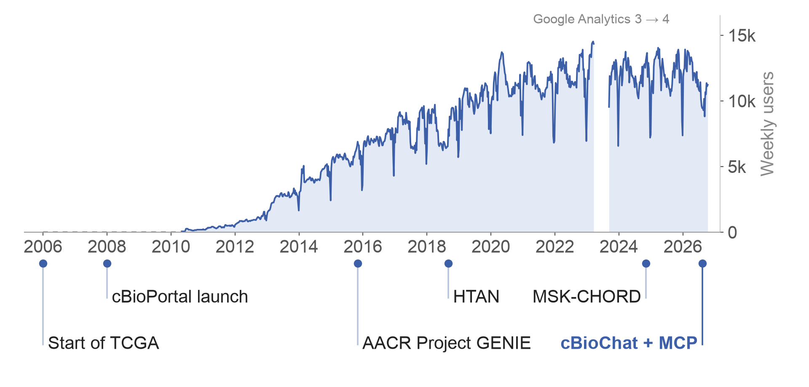
~12kusers per week
36k+citations of the 3 core papers
550+curated studies
~36MAPI requests per month
100+registered installations
Researchers Already Ask AI Assistants
Visits to cbioportal.org referred by AI assistants
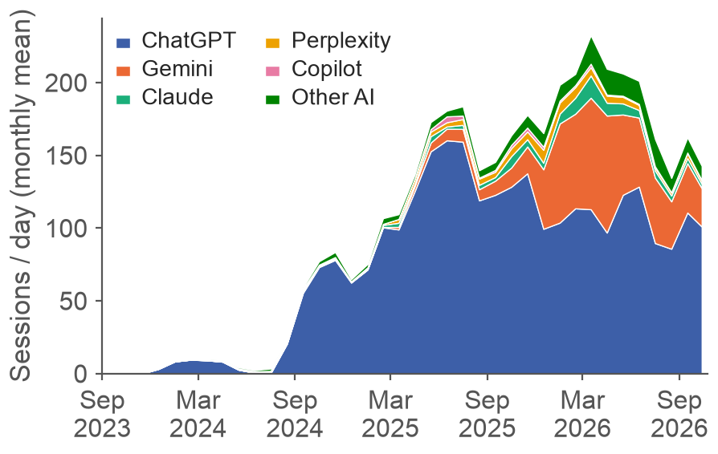
From near zero to 100–200 visits a day.
How do we bring cBioPortal into this era?
Google Analytics 4, sessions by referrer (monthly mean)
Two Directions, Launched August 2026
AI in cBioPortal, and cBioPortal in any AI
AI in the website
cBioChat
Ask in plain language at chat.cbioportal.org; every answer links back to the cBioPortal view that shows it.
cBioPortal in any AI
MCP servers
Connect Claude, ChatGPT, Copilot or your own agent, and use cBioPortal data in broader workflows.
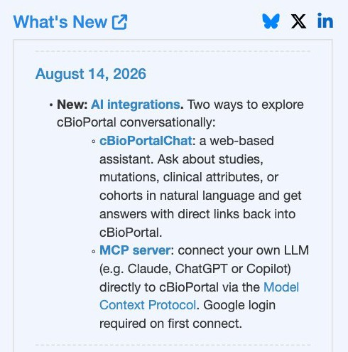
cBioChat: Everyday Questions
Query TCGA and look up treatments in MSK-CHORD, each confirmed in cBioPortal
cBioPortal in Your Own AI
Add the MCP connector once, then ask from the assistant you already use
mcp.cbioportal.org/db/mcp · mcp.cbioportal.org/navigator/mcp · illustration with real query results
cBioChat Usage
About 100 people a week use chat.cbioportal.org (1.2K so far this year)
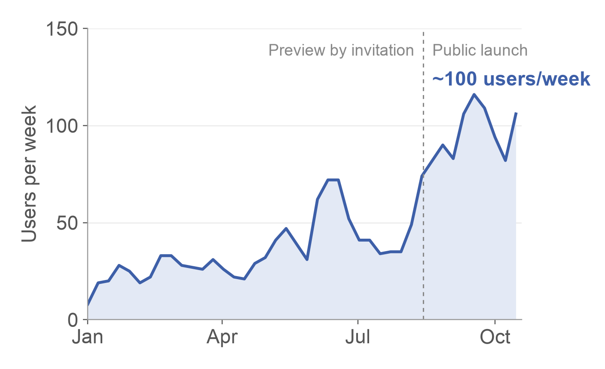
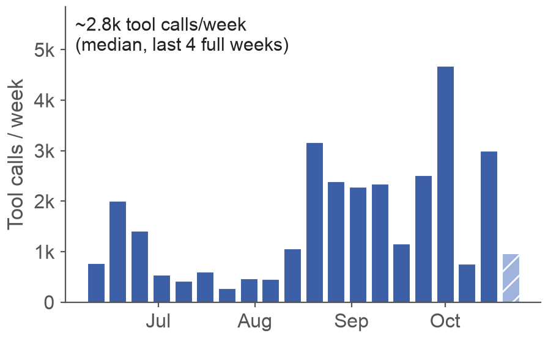
MCP tool calls per week, from Claude, Codex, Copilot, Cursor and custom agents
Left: weekly active users, Google Analytics (chat.cbioportal.org), Jan – Oct 2026. Right: Datadog, our own benchmark runs excluded
How Do We Know the Answers Are Right?
146 curated questions, graded on every release
Example questions
Data
“How many patients are in MSK-CHORD?”
→ 24,950Analysis
“Immunotherapy response in melanoma in MSK-CHORD?”
→ must say there are no melanoma patientsOut of scope
“Any flaws in the MSK-CHORD paper’s methods?”
→ must decline
Pass rate, latest run per model
Most common failure
Asking a clarifying question instead of acting
Beyond Bulk Genomics
More data types in cBioPortal
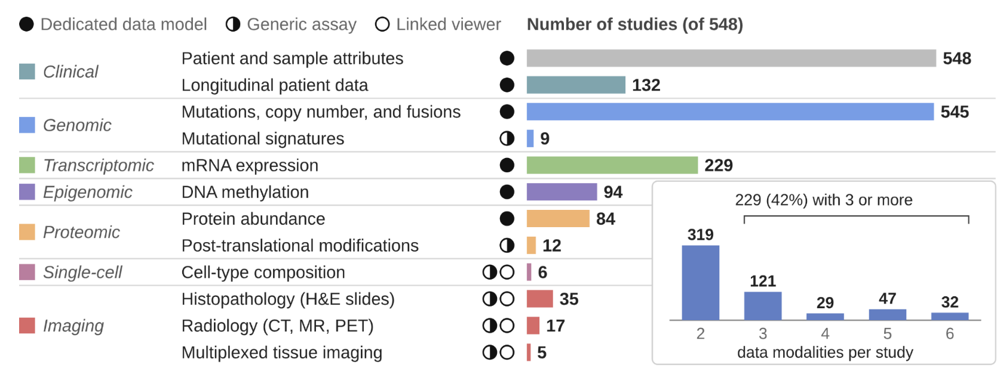
3 studies in cBioPortalmore coming
Breast cancerOHSU · Cell Rep Med 20225 samples
Colorectal polypsVanderbilt · Cell 202161 samples
Colorectal cancerMSK · Nature 202583 samples
Linked to Dedicated Viewers
Multimodal data in cBioPortal, single-cell data in Cell Explorer, multiplex imaging in Minerva
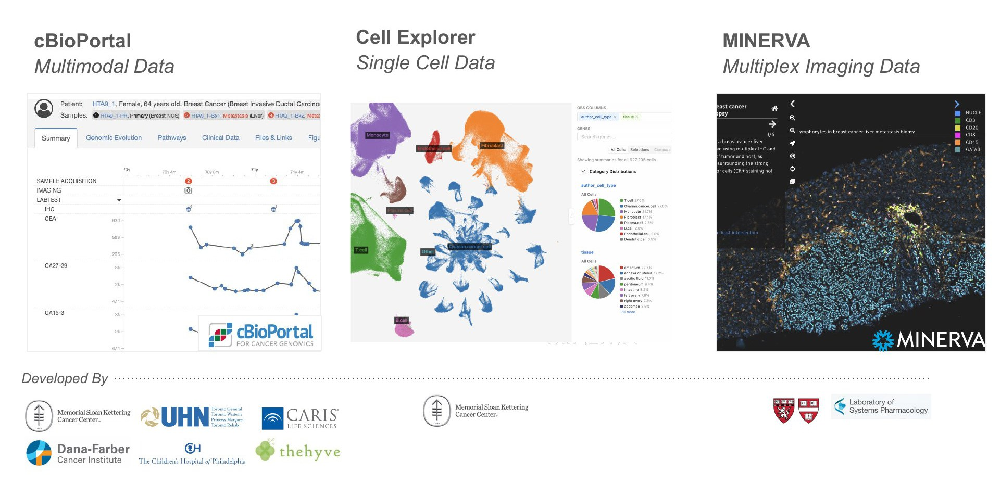
HTAN cBioChat Example: Two Routes to Colorectal Cancer
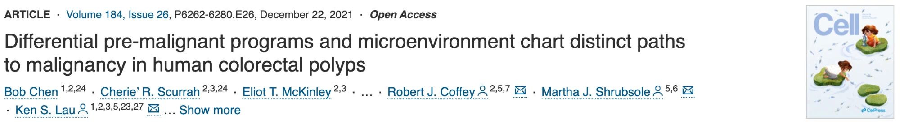
Conventional adenomasfrom WNT-driven stem cells
vsSerrated polypsfrom differentiated cells via metaplasia
Two observations to reproduce (HTAN Vanderbilt, 61 polyp samples in cBioPortal)
1
Different driver mutations
APC in 85% of tubular adenomas, BRAF V600E in 89% of sessile serrated lesions
2
Different neoplastic cells (scRNA-seq)
Adenoma-specific cells (ASCs) in adenomas, serrated-specific cells (SSCs) in serrated polyps
Can cBioChat reproduce both from the data in cBioPortal?
Asking About HTAN Data
Both observations, reproduced by asking and confirmed in cBioPortal
What Reproduced
| Chen et al., Cell 2021 | cBioChat, and the linked cBioPortal view | |
|---|
| “APC mutations were detected in 85% of the TAs”; BRAF V600E in 89% of SSLs | APC 11/13 tubular adenomas; BRAF V600E 8/9 sessile serrated lesions (mutation-profiled samples only) | Exact match |
| ASCs enriched in adenomas, SSCs in serrated polyps (scRNA-seq) | Median ASC fraction 0.30 vs 0.04, SSC 0.005 vs 0.21; cBioPortal’s test: q = 1.6e-5 and 2.5e-3 | Same direction |
AI in the Browser
Claude in Chrome reading a Minerva H&E slide of a tubular adenoma (HTAN Vanderbilt, HTA11_2951)
Features Shown
Bringing cBioPortal into the LLM era
1
AI in the cBioPortal Website
cBioChat at
chat.cbioportal.org: ask in plain language, with answers that link back to cBioPortal
2
cBioPortal in Your AI of Choice
Connect Claude, ChatGPT, Copilot or your own agent through the MCP at mcp.cbioportal.org
3
AI in the Browser
Visualize and interpret with Claude in Chrome; with the MCP it can also query the data
Acknowledgements
cBioPortal contributors and funders
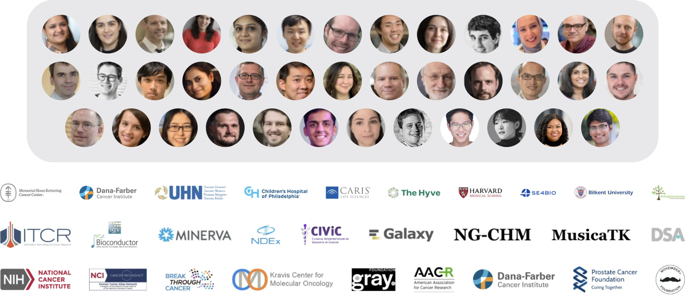
DCC team
Dar’ya
Alex
Niki
Robert
Rochelle
Ashley
Ino
Susheel
Vésteinn
Bill
Milen
Onur
Aaron Lisman · Bruno Grande · Xiang Li · Subhi Nandakumar · Pierrette Lo · Tiarah Jeudi
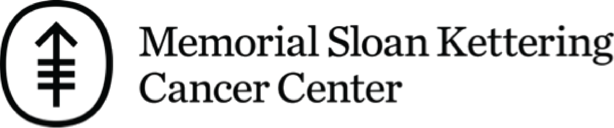
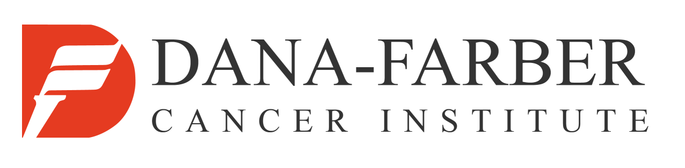
HTAN data: Vanderbilt center (Chen et al., Cell 2021)